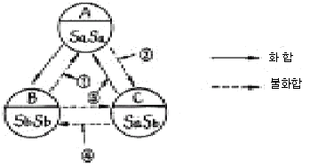

종자기사 (2006-08-06 기출문제)
1과목: 종자생산학
1. 종자의 순도결정에 대한 설명으로 옳은 것은?
- 검사의 결과는 개수에 대한 백분율로 나타낸다.
- 특정종자 검사는 순도검사보다 2배 정도 많이 조사한다.
- 순도검사에서는 약 2,500개의 종자를 검사한다.
- 한 개의 검사시료를 분석한 경우 각 항목의 중량비율은 소수점 아래 2자리로 한다.
(정답률: 알수없음)

2. 포장종자의 저장용 포장 재료가 완전다공질(完全多孔質)인 것을 사용할 경우 가장 큰 단점은?
- 포장비용이 비싸다.
- 종자 수분함량의 변화가 크다.
- 종자의 혼합 우려가 있다.
- 포장재료의 손상이 쉽다.
(정답률: 알수없음)
3. 배추과 채소의 채종 적기는?
- 백숙기
- 녹숙기
- 갈숙기
- 고숙기
(정답률: 알수없음)
4. 인공수분을 위한 방법 중 격리법의 종류가 아닌 것은?
- 웅화 . 웅예제거법
- 화판제거법
- 거리격리법
- 춘화처리법
(정답률: 알수없음)
5. 다음 중 콩, 녹두의 포장검사에서 특정해초는?
- 새삼
- 피
- 강아지풀
- 쇠비름
(정답률: 알수없음)
6. 발아할 때 종자의 양분저장기관이 지하에 남는 것은?
- 강낭콩
- 녹두
- 완두
- 콩
(정답률: 알수없음)
7. 다음 중 수분양식이 다른 한 작물은?
- 벼
- 보리
- 옥수수
- 콩
(정답률: 67%)
8. 성숙한 종자에 없었던 휴면, 즉 제2차 휴면을 유발하는 원인만 나열한 것은?
- 발아최고온도 이상의 온도, 수분스트레스
- 수분스트레스, 후숙기간
- 후숙기간, 발아억제물질
- 발아억제물질, 발아최고온도 이상의 온도
(정답률: 알수없음)
9. 종자 발아검사시 작물에 따른 종자를 예냉(豫冷)하거나 질산칼륨(KNO3) 등으로 처리하는 주된 목적은?
- 종자소독
- 종자 춘화처리
- 발아 균일화
- 종자 휴면타파
(정답률: 알수없음)
10. 다음 중 딸기, 감자, 카네이션, 난 등의 바이러스에 대한 무병주(virus free)를 대량생산하기 위한 조직배양 기술은?
- 자방배양
- 경정조직배양
- 배주배양
- 배배양
(정답률: 알수없음)
11. 건조하고 저온인 조건에서 오래 저장할 수 없는 종자는?
- 클로버
- 가지
- 접시꽃
- 밤
(정답률: 알수없음)
12. 배주 F1의 원종 채종시 뇌수분을 실시하는 주된 이유는?
- 개화시 주두의 기능이 정지되기 때문에
- 개화시기에는 웅성불임성이 나타나기 때문에
- 개회시에 자가불화합성이 나타나기 때문에
- 개회시에 화분이 없기 때문에
(정답률: 알수없음)
13. 다음 중 종자가 발아할 때 수분을 가장 많이 흡수하는 작물은?
- 벼
- 밀
- 옥수수
- 콩
(정답률: 알수없음)
14. 수확 및 탈곡 등 일련의 과정 중에 발생하는 기계적 손상 때문에 종자의 활력이 떨어질 수 있다. 수분함량이 8% 이하인 옥수수를 기계로 탈곡하면 종자의 몇 % 정도가 손상을 입는가?
- 약 10% 정도
- 약 30% 정도
- 약 50% 정도
- 약 70% 정도
(정답률: 알수없음)
15. 다음 중 구비화(완전화; 갖춘꽃)가 아닌 것은?
- 벼
- 콩
- 감자
- 클루버
(정답률: 알수없음)
16. 채종포 선정에 대한 설명 중 가장 적합한 것은?
- 점질토보다는 모래땅이 알맞다.
- 양파에서는 개화기의 월 강우량이 500mm 이하이어야 채종 적기가 될 수 있다.
- 격리거리에서 채종포 면적은 고려할 필요가 없다.
- 자가불화합성을 이용한 F1 채종시에도 타품종과 격리를 필요로 한다.
(정답률: 알수없음)
17. 다음 중 우량한 감자종서의 채종방법과 관련이 없는 것은?
- 자연교잡을 막기 위해서 1,000m 이상 격리 재배한다.
- 채종포 주위에 십자화과, 장미과 식물을 제거한다.
- 채종포에서 바이러스에 이병 된 감자를 제거한다.
- 채종 포장을 집단화하여 병해충의 공동방제를 한다.
(정답률: 알수없음)
18. 다음 중 무배유형(無胚乳型) 종자를 가진 식물만으로 구성 된 것은?
- 완두, 토마토
- 토마토, 밀
- 밀, 호박
- 호박, 완두
(정답률: 알수없음)
19. 100kg 까지의 포장물에서 종자검사용 시료의 추출시 만일 소집단의 크기가 5~8대라면 매 포장물(자루)에서 채취해야 할 1차 시료의 최소기준은?
- 1 개소 이상
- 2 개소 이상
- 3 개소 이상
- 5 개소 이상
(정답률: 알수없음)
20. 종자의 발아시험에 대한 설명 중 틀린 것은?
- 시료는 무작위로 추출한다.
- 발아검사의 결과는 100립 3반복의 평균치로 표시한다.
- 결과표시에 있어 정상발아, 비정상발아 및 불발아의 합계가 100(%)가 되어야 한다.
- 발아검사결과 발아율의 반복간 차가 허용범위를 초과할 때는 재시험을 실시하여야 한다.
(정답률: 알수없음)
2과목: 식물육종학
21. 체세포 염색체수가 20인 2배체 식물의 연관의 수는?
- 20
- 12
- 10
- 2
(정답률: 90%)
22. 자가불화합성 중 배우자에 의한 불화합성인 경우 다음 교배조합 중 불화합이 되는 것은?
- S1S1× S2S3
- S1S2× S2S2
- S1S1× S3S3
- S1S2× S2S3
(정답률: 알수없음)
23. 중복수정에 있어서 정핵과 결합하는 배낭모세포 내의 핵은?
- 관핵과 조세포핵
- 극핵과 반족세포핵
- 난핵과 극핵
- 난핵과 반족세포핵
(정답률: 알수없음)
24. 염섹체의 부분적 이상(異常)과 관계가 없는 용어는?
- 전좌
- 역위
- 중복
- 2가 염색체
(정답률: 알수없음)
25. 다음 게놈구성에서 복이배체(複二倍體)를 나타내는 것은?
- AAA
- AABB
- AABBCC
- AAAABBBB
(정답률: 알수없음)
26. 둘 이상의 형질간에 유전상관이 성립될 수 있는 원인들로 가장 적합한 것은?
- 유전자의 다면발현, 염색체 결실
- 염색체 결실, DNA 염기치환
- DNA 염기치환, 연관유전자 작용
- 연관유전자 작용, 유전자의 다면발현
(정답률: 알수없음)
27. 콜히친 처리하면 염색체수를 배가할 수 있다. 이 콜히친의 기능을 바르게 설명한 것은?
- 세포 융합을 시켜 염색체 수가 배가된다.
- 인근 세포의 염색체를 세포막을 통과시켜 이동시킨다.
- 분열 중이 아닌 세포의 염색체를 분할시킨다.
- 분열중인 세포의 방추사와 세포막의 형성을 억제한다.
(정답률: 알수없음)
28. 농작물 품종의 조만성을 결정하는 요소를 옳게 나타낸 것은?
- 기본영양 생장성, 감광성, 감온성
- 감온성, 휴면성, 유전성
- 유전성, 감광성, 휴면성
- 휴면성, 기본영양 생장성, 광호흡성
(정답률: 알수없음)
29. 다음 중 중앙치를 중심으로 (+)와 (-)의 방향으로 정규곡선을 나타내는 변이는?
- 방황변이
- 대립변이
- 돌연변이
- 아조변이
(정답률: 알수없음)
30. 순계분리법에 관한 설명 중 틀린 것은?
- 주로 자가수정 작물에서 행하는 방법이다.
- 멘델의 유전법칙에 기반을 둔 것이다.
- 자식열세 또는 근교약세를 나타내지 않는 타가수정작물에도 적용될 수 있다.
- 선택의 효과를 인정하므로 일명 선택육종법이라고도 한다.
(정답률: 알수없음)
31. 내병성 육종을 효과적으로 수행하기 위하여 필요한 여러 조치들 중 틀린 것은?
- 가장 병에 약한 계통을 일정한 간격으로 섞어 심는다.
- 문제되는 병이 가장 많이 발생하는 계절에 선발해야 한다.
- 병원균을 인공 접종시켜 준다.
- 살균제를 정기적으로 살포해 준다.
(정답률: 알수없음)
32. 다음 그림은 배추과 채소의 자가 및 교잡불화합의 유전양식이다. 잘못 표시된 것은?(단, ♀는 Sa:Sb, ♂는 Sa ＜ Sb 이다.)

- ①
- ②
- ③
- ④
(정답률: 알수없음)
33. 순환선발(循環選拔, recurrent selection)의 1주기로 적합한 것은?
- 1년
- 2년
- 3년
- 4년
(정답률: 알수없음)
34. 자가불화합성 중 생식세포가 생성되는 식물체, 즉 아포체의 반응에 의하여 불화합성이 결정되는 작물이 아닌 것은?
- 담배
- 코스모스
- 사탕무우
- 해바라기
(정답률: 알수없음)
35. 새로 육성한 토마토 7품종의 생산력을 검정하기 위하여 난괴법 4반복으로 포장시험을 실시하였다. 이때 분산분석표에서 오차의 자유도는?
- 27
- 18
- 6
- 3
(정답률: 알수없음)
36. 기본적인 육종과정이 바르게 연결된 것은?
- 재료집단수집 → 선발 및 고정 → 지역적응시험 → 생산력 검정 → 품종등록 → 증식 및 보급
- 재료집단수집 → 생산력 검정 → 선발 및 고정 → 지역적응시험 → 품종등록 → 증식 및 보급
- 재료집단수집 → 지역적응시험 → 선발 및 고정 → 생산력 검정 → 품종등록 → 증식 및 보급
- 재료집단수집 → 선발 및 고정 → 생산력 검정 → 지역적응시험 → 품종등록 → 증식 및 보급
(정답률: 알수없음)
37. 집단 육종법과 파생계통 육종법의 차이점은?
- 집단 육종법은 F2 에서 선발을 거친다.
- 파생계통 육종법은 F2 세대에서 선발을 거친다.
- 파생계통 육종법은 전 세대에서 선발이 이루어진다.
- 후기 세대의 처리가 약간 다를 뿐이다.
(정답률: 알수없음)
38. 육성종을 농가에 보급 할 때까지의 채종 체계를 기술한 것 중 옳은 것은?
- 계통선발 → 원원종 → 원종 → 일반채종 → 농가보급
- 원종 → 계통선발 → 원원종 → 일반채종 → 농가보급
- 원원종 → 원종 → 계통선발 → 일반채종 → 농가보급
- 원종 → 원원종 → 일반채종 → 계통선발 → 농가보급
(정답률: 알수없음)
39. 교잡육종을 위해 교배친을 선정하는데 고려할 사항이 아닌 것은?
- 특정조사성적
- 춘화처리능력
- 과거실적검토
- 근연계수이용
(정답률: 알수없음)
40. 비대립유전자간에 일어날 수 있는 상호작용만으로 짝지어진 것은?
- 불완전 우성, 상위와 하위 현상
- 상위와 하위 현상, 보족유전자 작용
- 복수유전자 작용, 복대립유전자 작용
- 복대립유전자 작용, 불완전 우성
(정답률: 알수없음)
3과목: 재배원론
41. 재배존건에 따른 T/R율을 올바르게 설명한 것은?
- 질소비료를 많이 주면 T/R율이 감소한다.
- 토양수분이 감소하면 T/R율이 증대한다.
- 일사량이 보족하면 T/R율이 증대된다.
- 토양 통기가 불량하면 T/R율이 감소한다.
(정답률: 알수없음)
42. 식물의 생산량(수량)은 가장 소량으로 존재하는 무기성분에 의해 지배받는다는 최소율의 법칙을 주장한 학자는?
- Liebig
- Muller
- Millar
- Leeuwenho다
(정답률: 알수없음)
43. 종자 휴면의 원인과 관련이 없는 것은?
- 경실종자
- 종피의 기계적 저항
- 성숙 qoi
- 종피의 불투기성(不透氣性)
(정답률: 알수없음)
44. 도복지수를 계산하는데 거리가 먼 것은?
- 지상부 무게
- 줄기의 좌절중
- 잎의 두께
- 줄기의 길이(키)
(정답률: 알수없음)
45. 벼의 생육과정에서 지상부에 대한 뿌리의 건물중 비율이 가장 높은 생육 시기는?
- 분열초기
- 신장기
- 출수기
- 등숙기
(정답률: 알수없음)
46. 질산태질소(NO3)에 관한 설명으로 맞는 것은?
- 밭 작물에서 추비로서 적합하지 않다.
- 물에 잘 녹지 않으며 작물의 이용형태는 질소를 잘 흡수 이용하지만 지효성이다.
- 논에서는 탈질작용으로 유실이 심하다.
- 논에서는 환원층에 주면 비효가 오래 지속된다.
(정답률: 알수없음)
47. 다음 중 화곡류의 성숙과정으로 옳은 것은?
- 유숙 - 호숙 - 황숙 - 완숙 - 고숙
- 호숙 - 황숙 - 완숙 - 고숙 - 유숙
- 황숙 - 완숙 - 고숙 - 유숙 - 고숙
- 완숙 - 고숙 - 유숙 - 고숙 - 황숙
(정답률: 알수없음)
48. 습해 대책으로 적합하지 않은 것은?
- 밭에는 휴림휴파 재배를 한다.
- 배수시설을 설치한다.
- 과산화석회(CaO2)를 종자에 분의하여 파종한다.
- 미숙유기물을 시용하여 입단형성을 촉진시킨다.
(정답률: 알수없음)
49. 어느 작물의 요수량이 500 이라면 소비된 물의 양은?
- 0.5kg
- 15kg
- 50kg
- 500kr
(정답률: 알수없음)
50. 식물체내에서 합성되는 옥신과 비슷한 활성을 나타내는 인공 합성물질은?
- indole - 3 - acetic acid
- α - phenyiacetic acid
- α - naphthaleneacetic acid
- 3 - indoleacetonitrile
(정답률: 알수없음)
51. 식물체의 흡수량이 결핍되면 식물체 내의 이상현상(생장점이 말라 죽음, 줄기가 연약해짐, 하엽의 탈락)이 발생되어 한해에 약하게 되는 것은?
- 질소
- 인
- 칼륨
- 칼슘
(정답률: 알수없음)
52. 다음 중 작물의 신장생장을 가장 억제하는 광선은?
- 자외선
- 적외선
- 적색광
- 청색광
(정답률: 알수없음)
53. 화성유도에 저온. 장일이 필요한 식물의 그 대체 효과를 갖는 생장조절제 적합한 것은?
- 오옥신
- 지베렐린
- 사이토키아닌
- 에틸렌
(정답률: 알수없음)
54. CO2 시비의 농도를 일정하게 맞추어 줌으로써 발생하는 효과로 틀린 것은?
- 수량 증가
- 개화수 증가
- 광합성 속도 증대
- 병해충 감소
(정답률: 알수없음)
55. 작물을 생육형에 따라 분류할 때 틀린 것은?
- 벼 - 주형(株型)
- 고구마 - 포복형(匍匐型)
- 오차드그래스 - 주형(株型)
- 수단그래스 - 하번초(下繁草)
(정답률: 알수없음)
56. 최적엽면적에 대한 설명으로 틀린 것은?
- 군락상태에서 건물생산을 최대로 할 수 있는 엽면적이다.
- 군락의 최적엽면적은 생육시기, 일사량, 수광태세 등에 따라 다르다.
- 일사량이 낮을수록 최적엽면적지수는 커진다.
- 최적엽면적지수를 크게 하는 것은 군락의 건물 생산능력을 크게 하여 수량을 증대 시킨다.
(정답률: 알수없음)
57. 다음 식물호르몬에 관한 설명 중 잘못 된 것은?
- 오옥신은 주로 세포의 신장촉진의 역할을 한다.
- ABA는 잎의 노화. 낙엽을 촉진한다.
- GA는 정아우세현상에 관여한다..
- 사이토키아닌은 세포분열을 촉진한다.
(정답률: 알수없음)
58. 상적발육설에 관한 설명 중 틀린 것은?
- 작물의 발육이란 체내의 순차적인 질적 재조정 작용을 말한다.
- 1년생 종자식물의 발육상은 개개의 단데에 의해서 구성되어 있다.
- 개개의 발육상은 서로 접속해서 성립되어 있으며, 앞의 발육상을 경과해야 다음 발육상으로 이행을 할 수 있다.
- 1개의 식물체가 개개의 발육상을 경과 하려면 발육상에 따라 서로 다른 특정한 환경조건은 필요 없다.
(정답률: 알수없음)
59. 도복의 유발조건을 바르게 설명한 것은?
- 키가 큰 품종은 대가 튼튼해도 도복이 심하다.
- 칼륨, 규산이 보족하면 도복이 유발된다.
- 토양환경과 도복은 상관이 없다.
- 밀식은 도복을 적게 한다.
(정답률: 알수없음)
60. 작물의 자연분화(自然分化) 발달과정에서 첫 단계는?
- 지리적 고립
- 도태와 적응
- 유전적 변이
- 인위돌연변이
(정답률: 알수없음)
4과목: 식물보호학
61. 유성세대가 없는 불완전균의 영양균사에서 마치 유성생식과 같은 유전적인 재조합이 일어나는 현상은?
- 돌연변이
- 교잡
- 이질다핵형성
- 준유성교환
(정답률: 알수없음)
62. 다음 중 불완전변태(不完全變態)를 하는 해충은?
- 노린재목 해충
- 딱정벌레목 해충
- 나비목 해충
- 파리목 해충
(정답률: 알수없음)
63. 식물 병원균에 대한 살균제의 선택성에서 살포된 농약이 가용태로 변화되는 요인과 거리가 먼 것은?
- 대기 중의 CO2 에 의하여
- 기주식물의 분비물에 의하여
- 농약 자체의 주성분에 의하여
- 병원균의 분비물에 의하여
(정답률: 30%)
64. 식물병의 진단에 사용하는 원칙을 제정한 사람은?
- De Bary
- koch
- Stanlry
- Smith
(정답률: 알수없음)
65. 유충과 성충이 모두 작물에 피해를 주는 것은?
- 배추벼룩잎벌레
- 미국흰불나방
- 애꽃노린재
- 보리 잎벌
(정답률: 알수없음)
66. 최근 직파재배 때문에 방제가 쉽지 않은 1년생 잡초이다. 잎의 앞뒤에 털이 없으며, 엽설도 없다. 줄기는 직립하고 총생하며, 이삭길이는 5mm 정도이고 출수기가 8월말부터 9월 상순이 최성기인 잡초는?
- 방동산이
- 물달개비
- 여뀌
- 피
(정답률: 알수없음)
67. 수박 잎에 겹둥근무늬가 나타나며 수박에는 움푹한 점무늬가 흑갈색으로 변하고 그 위에 담홍색 점질물을 분비하는 병은?
- 탄저병
- 덩굴마름병
- 덩굴쪼김병
- 노균병
(정답률: 알수없음)
68. Phenthoate 20% 유제 100cc를 0.⑤%로 희석하려고 할 때 물의 양은?
- 29,900cc
- 39,900cc
- 49,900cc
- 59,900cc
(정답률: 알수없음)
69. 감자 바이러스병 진단에 사용되는 방법으로서 미리 싹을 튀워 병징을 발현시켜 발병 유무를 진단하는 방법은?
- 병징음폐제거
- 협촉반응
- 최아엽
- 지표식물
(정답률: 알수없음)
70. 다음 중 사과탄저병의 병원균으로 가장 적합한 것은?
- Glomerella cingulata
- Agrobacterium tumefaciens
- Rhizoctonia solani
- Plasmodiphora brassicae
(정답률: 알수없음)
71. 다음 중에서 암발아 잡초는?
- 바랭이
- 소리쟁이
- 냉이
- 쇠비름
(정답률: 알수없음)
72. 우리나라 밭에서 발생되는 광엽 다년생 잡초는?
- 메꽃
- 가래
- 벗풀
- 올방개
(정답률: 알수없음)
73. 다음 중 작물 기생성 병해의 발생 조건이 아닌 것은?
- 작물의 조건 및 성질
- 농약의 사용 방법
- 병원체의 존재 및 접촉
- 환경조건
(정답률: 알수없음)
74. 다음 중 농약에 관한 설명으로 틀린 것은?
- 보호살균제는 병원균이 침입한 후 식물을 보호하기 위해 살포한다.
- 독제 살충제는 해추이 먹어야 살충작용을 한다.
- 유인제는 성 호르몬이 주로 이용된다.
- 살비제는 응애류 방제 약제이다.
(정답률: 알수없음)
75. 다음 중 곤충의 형태 중 후대뇌(제 3대뇌)에 연결되어 있는 것은?
- 큰 턱 신경
- 작은 턱 신경
- 윗 입술 신경
- 아래 입술 신경
(정답률: 알수없음)
76. 다음 중 벼 도열병균의 주된 점염원으로 가장 적합한 것은?
- 수확하고 남은 볏짚
- 관개수
- 토양
- 잡초
(정답률: 알수없음)
77. 다음 중 고형 시용제인 것은?
- 수용제
- 수화제
- 유제
- 입제
(정답률: 알수없음)
78. 작물의 병이 발생하는데 직접적으로 관여하는 가장 중요한 요인은?
- 소인
- 유인
- 종인
- 주인
(정답률: 알수없음)
79. 해충의 종합적관리 필요성에 대한 설명으로 틀린 것은?
- 살충제에 대한 저항성 해충의 출현
- 농약사용에 의한 천적류의 파괴
- 살충제의 잔류독성 문제
- 생력화 재배
(정답률: 알수없음)
80. 농약 안전을 위해 산출하는 인체 1일 섭취 허용량(ADI)이란?(오류 신고가 접수된 문제입니다. 반드시 정답과 해설을 확인하시기 바랍니다.)
- 사람이 매일 섭식하여도 안전한 독성물질의 허용량
- 농약을 안전하고 적정하게 사용하도록 허용하는 량
- 농약의 중독 및 환경오염을 예방하기 위한 허용량
- 최대무작용량(NOEL)에 다시 100배의 안전계수를 곱하여 산출한 량
(정답률: 알수없음)
5과목: 종자관련법규
81. 수입종자에 대하여 수입적응시험을 받지 아니하고 종자를 수입한 자에 대한 벌칙은?
- 500만원 이하의 벌금
- 1,500만원 이하의 벌금
- 1년 이하의 징역 또는 1,000만원 이하의 벌금
- 2년 이하의 징역 또는 2,000만원 이하의 벌금
(정답률: 알수없음)
82. 품종보호권 설정등록이 있는 때에 공보에 공고할 사항이 아닌 것은?
- 설정등록연월일
- 품종보호권의 존속기간
- 품종보호등록번호
- 품종의 주요특성
(정답률: 알수없음)
83. 다음 중 품종보호출원의 요지를 변경하는 경우는?
- 오기를 정정하는 경우
- 불명료한 기재를 석명하는 경우
- 품종보호출원인의 주소를 변경하는 경우
- 품종보호줄원인의 개인 영업소의 소재지를 변경하는 경우
(정답률: 알수없음)
84. 종자보증시 재검사를 신청할 때 종자검사 결과를 통지받는 날부터 며칠 이내에 신청해야 하는가?
- 7일
- 15일
- 20일
- 30일
(정답률: 70%)
85. 품종목록등재품종의 공고 때 공보애 게재해야 할 사항이 아닌 것은?
- 품종의 명칭
- 품종의 성능 및 시험성적
- 종자생산자의 성명 및 주소
- 재배적응지역
(정답률: 알수없음)
86. 보증종자의 사후관리 시험의 항목에 해당되지 않는 것은?
- 검사항목
- 검사시기
- 검사자 자격
- 검사횟수
(정답률: 알수없음)
87. 숙근류의 품종생산. 판매신고용 종자 시료의 최소 기준량은?
- 10촉이상
- 20촉이상
- 50촉이상
- 100촉이상
(정답률: 알수없음)
88. 국가품종목록에 등재된 품종의 유효기간에 대한 설명으로 틀린 것은?
- 품종목록등재의 유효기간은 등재한 날의 다음 해부터 10년까지로 한다.
- 품종목록등재의 유효기간은 연장신청에 의하여 5회에 한하여 연장될 수 있다.
- 유효기간 연장신청은 그 유효기간 만료전 1년 이내에 신청하여야 한다.
- 농림부장관은 유효기간연장신청이 있는 경우는 품종목록등재 당시의 품종성능을 유지하고 있는 때에는 그 연장신청을 거부할 수 없다.
(정답률: 알수없음)
89. 종자관리사의 자격기준으로 잘못된 것은?
- 종자산업기사 자격을 취득한 후 종자업무 또는 이와 유사한 업무에 1년이상 종사한 자
- 국가기술자격법에 의한 종자기술사 취득자
- 종자산업기사 또는 종자기능사 자격을 취득한 후 종자기사 자격을 취득한 자
- 국가기술자격법에 의해 버섯종균기능사 자격을 취득하고 종자업무에 3년 이상 종사한 자로서 버섯의 경우에 한한다.
(정답률: 알수없음)
90. 종자산업법에 의하여 농림부장관 또는 심판위원회 위원장에게 제출하는 서류의(물건포함) 효력 발생시기는 원칙적으로 언제부터인가?
- 서류가 발송된 날
- 서류 발송 3일 후
- 서류가 도달된 날
- 서류 도달 3일 후
(정답률: 알수없음)
91. 품종보호심판위원회에 대한 설명으로 틀린 것은?
- 심판위원은 직무상 합의하여 심판하며, 심판위원의 자격은 농림부령으로 정한다.
- 품종보호에 관한 심판과 재심을 관장하기 위하여 농림부에 둔다.
- 위원회는 심판위원회원장을 포함한 8인 이내로 구성한다.
- 합의체에 합의는 과반수에 의하여 이를 결정하고 심판의 합의는 공개하지 않는다.
(정답률: 알수없음)
92. 종자산업법에서 규정하고 있는 품종의 정의로 적합한 것은?
- 식물학상 통용되는 최저분류 단위의 식물군으로서 유전적으로 발현되는 특성 중 한가지 이상의 특성이 다른 식물군과 구별되고 변함없이 증식될 수 있는 것
- 동일한 재배종에 속하지만 형태적, 생태적으로 실용 형질에 있어서 다른 개체군과 명확하게 구별되고 또한 동일 군내에서도 서로 구별이 되는 개체군
- 다른 재배종에 속하면서 형태적, 생태적으로 실용 형질에 있어서 다른 개체군과 명확하게 구별 되고 또한 동일 군내에서도 서로 구별이 곤란한 개체군
- 식물학상 통용되는 최고분류 단위의 식물군으로서 외관상으로 나타나는 형질 중 한가지 이상의 특성이 다른 식물군과 구별되고 변함없이 증식될 수 있는 것
(정답률: 알수없음)
93. 종자관련 규정에서 보면 품종보호출원일 이전까지 일반인에게 알려져 있는 품종과 명확하게 구별 되는 경우에는 해당 품종은 구별성을 갖춘 것으로 보는데 일반인에게 알려져 있는 품종에 해당 되는지 않는 것은?
- 유통되고 있는 품종
- 보호품종
- 품종보호를 받지 못한 품종
- 품종목록에 등재되어 있는 품종
(정답률: 알수없음)
94. 종자산업법상 작물별 종자보증의 유효기간으로 맞는 것은?
- 채소 : 2년
- 버섯 : 1년
- 식량작물 : 2년
- 화훼류: 3년
(정답률: 알수없음)
95. 품종목록등재대상작물의 종자를 판매 또는 보급하고자 할 때 종자의 보증을 받아야 하는 경우는?
- 1대 잡종의 친 또는 합성품종의 친으로만 쓰이는 경우
- 증식목적으로 판매한 후 생산된 종자를 판매자가 다시 전량 매입하는 경우
- 시험 또는 연구목적으로 쓰이는 경우
- 종자용 목적으로 사용하는 경우
(정답률: 알수없음)
96. 다음 중 반드시 한 개의 고유한 품종명칭으로 등록하도록 규정하고 있는 경우에 해당되지 않는 것은?
- 고추 품종을 육성하여 전량 일본에 수출할 경우
- 벼 품종을 육성하여 국가품종목록에 등재할 경우
- 레트클로버 품종을 육성하여 품종보호출원 할 경우
- 장미품종을 도입 후 증식하여 종자를 판매하고자 신고할 경우
(정답률: 알수없음)
97. 수입적응 시험을 실시하는 품목과 농림수산 관련 법인과의 연결이 잘못된 것은?
- 과수 : 한국과수종묘협회
- 목초 : 한국종자협회
- 버섯 : 한국종균생산협회
- 약용작물 : 한국생약협회
(정답률: 알수없음)
98. 종자산업법상에 의한 5년 이하의 징역 또는 3천만원이하의 벌금에 해당되지 않는 것은?
- 품종보호권 및 전용실시권을 침해한 자
- 품종보호권 및 전용실시권의 상속을 신고하지 않은 자
- 임시보호권을 침해한 자(당해 품종보호권의 설정 등록을 한 경우)
- 사기 기타 부정한 방법으로 품종보호사정 또는 심결을 받은 자
(정답률: 40%)
99. 다음 중 피해립이 아닌 것은?
- 열손립
- 배아가 없는 잡초종자
- 발아립
- 상해립
(정답률: 알수없음)
100. 품종보호권의 포기에 관한 설명 중 옳은 것은?
- 품종보호권자는 전용실시권자의 동의없이 품종보호권을 포기할 수 있다.
- 전용실시권자는 질권자의 동의없이 전용실시권을 포기할 수 있다.
- 통상실시권자는 질권자의 동의없이 통상실시권을 포기할 수 있다.
- 품종보호권자는 통상실시권자의 동의를 얻지 아니하면 품종보호권을 포기할 수 없다.
(정답률: 알수없음)